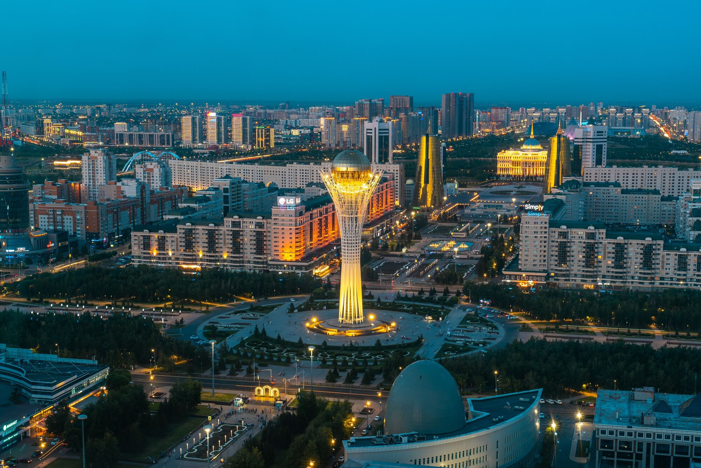
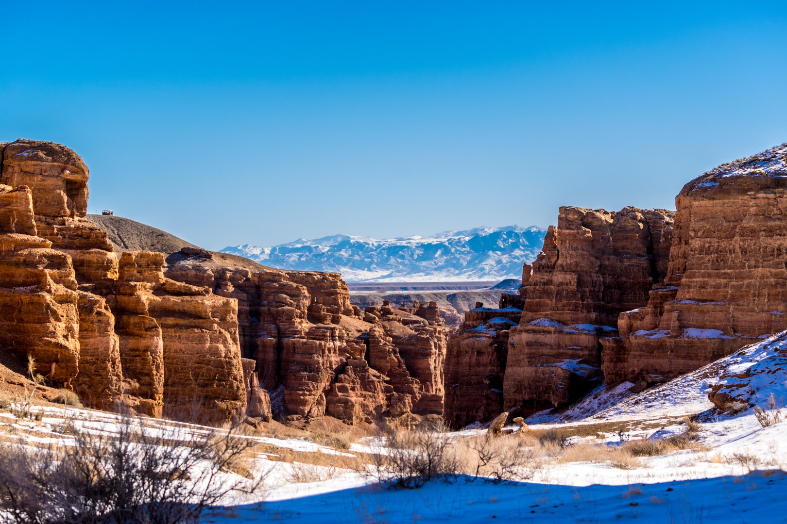
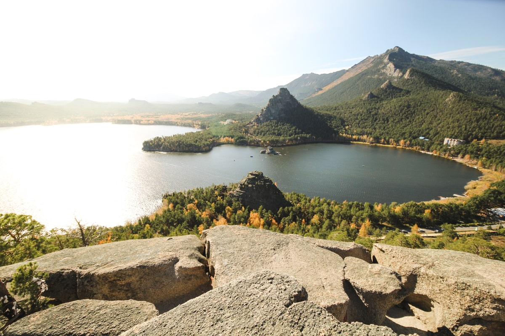
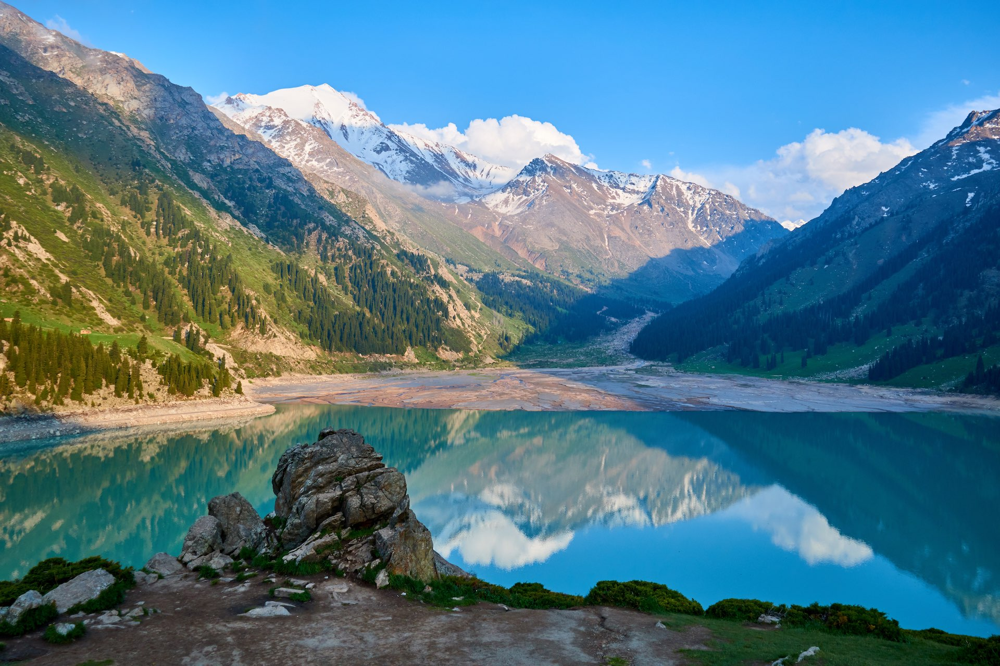
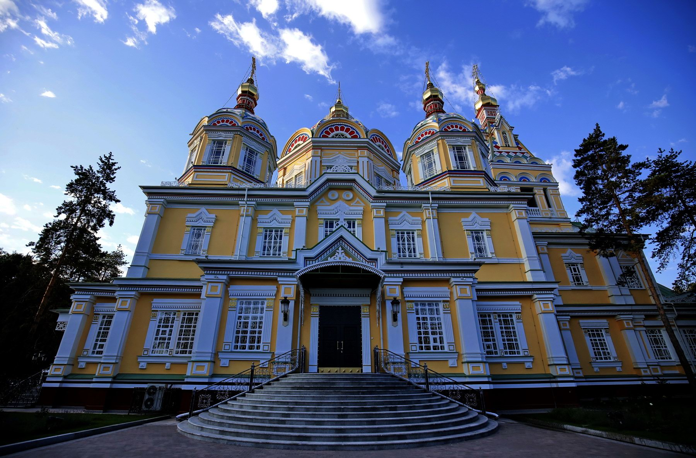

Top 5 Must-Visit Destinations
in Kazakhstan

Bayterek Tower
A defining landmark of Kazakhstan, the Bayterek Tower in Nur-Sultan is more than just an architectural marvel—it embodies the nation's aspirations and cultural heritage. Inspired by the legend of the mythical bird Samruk, this striking tower offers a breathtaking 360-degree panoramic view of the capital. Standing at its observation deck, visitors can experience the city's blend of futuristic design and deep-rooted traditions, making it an essential stop for anyone exploring Kazakhstan.

Charyn Canyon
Nicknamed the "Grand Canyon of Kazakhstan" Charyn Canyon is a natural masterpiece sculpted by time itself. Its dramatic cliffs, surreal rock formations, and vibrant hues create an unforgettable visual spectacle. Whether you're an adventure seeker ready to hike its winding trails or a nature lover capturing its stunning beauty, this geological wonder offers a rare glimpse into Earth's ancient history. No trip to Kazakhstan is complete without witnessing this breathtaking canyon.

Burabay National Park
Known as the "Switzerland of Kazakhstan" Burabay National Park is a hidden gem of pristine nature, where crystal-clear lakes meet dense pine forests and towering rock formations. Whether you're looking to escape the city for tranquility, enjoy outdoor activities like boating and hiking, or simply soak in the breathtaking scenery, Burabay is a must-visit. Its mystical rock formations, some resembling legendary creatures, add to the park's enchanting charm.

Ile-Alatau National Park
A paradise for adventure lovers, Ile-Alatau National Park offers a spectacular escape into the wild. Located near Almaty, this park boasts snow-capped peaks, cascading waterfalls, lush valleys, and diverse wildlife. Whether you crave an adrenaline rush from mountain trekking or a peaceful retreat in nature, this park delivers an unforgettable experience. Its stunning landscapes change with the seasons, making every visit a unique and awe-inspiring journey.

Ascension Cathedral
A marvel of engineering and history, the Ascension Cathedral in Almaty is one of the tallest wooden structures in the world—built entirely without nails. This architectural masterpiece has withstood powerful earthquakes, a testament to its remarkable craftsmanship. Stepping inside, visitors are greeted with stunning frescoes, golden domes, and a sense of timeless spirituality. Whether you admire history, architecture, or sacred spaces, this cathedral is a must-see.